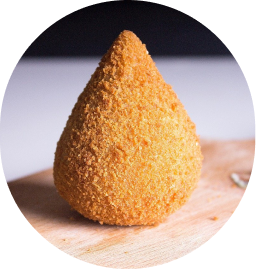

Coxinha

Description
a quick coxinha recipe for the whole family.
Ingredients
- 4 cups wheat
- 4 cups milk
- 1 chicken stock
- 1/2 tsp margarine
Steps
- Bring the milk, margarine and stock to the boil.
- Bring to the boil.
- Pour in the wheat all at once and stir well.
- Then remove from the pan and place on the table.
- Knead a little and start shaping the drumsticks.
- Fry in hot oil, wait until golden brown, remove and serve.